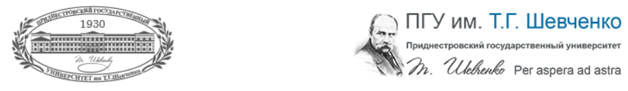

Приднестровский государственный университет им. Т.Г.Шевченко
|  | ||
|---|---|---|
| № п/п | Факультет, институт | Структурное подразделение |
| 1. | Аграрно-технологический факультет | 1. Кафедра ветеринарной медицины
2. Кафедра садоводства, защиты растений и экологии 3. Кафедра технических систем и электрооборудования в агропромышленном комплексе 4. Кафедра технологии производства и переработки сельскохозяйственной продукции 5. Кафедра эксплуатации и ремонта машинно-тракторного парка |
| 2. | Естественно-географический факультет | 1. Кафедра ботаники и экологии
2. Кафедра зоологии и общей биологии 3. Кафедра социально-экономической географии и регионоведения 4. Кафедра техносферной безопасности 5. Кафедра физиологии и санокреатологии 6. Кафедра физической географии, геологии и землеустройства 7. Кафедра химии и методики преподавания химии 8. НИЛ «Биомониторинг» 9. НИЛ «Геологические ресурсы» 10. НИЛ «Региональные исследования» 11. НИЛ «Физиологии стресса и адаптации» |
| 3. | Инженерно-технический институт | 1. Кафедра автоматизированных технологий и промышленных комплексов
2. Кафедра информационных технологий и автоматизированного управления производственными процессами 3. Кафедра машиноведения и технологического оборудования 4. Кафедра программного обеспечения вычислительной техники и автоматизированных систем 5. Кафедра производство и эксплуатация технологического оборудования 6. Кафедра электротехнического оборудования 7. Кафедра электроэнергетики и электротехники 8. НИЛ «Математическое моделирование» 9. НИЛ «Электрохимические производства» |
| 4. | Институт государственного управления, права и социально-гуманитарных наук | 1. Кафедра государственного управления
2. Кафедра гражданского права и гражданского процесса 3. Кафедра истории 4. Кафедра конституционного, административного и муниципального права 5. Кафедра музыкального образования 6. Кафедра политологии и политического анализа 7. Кафедра предпринимательского и трудового права 8. Кафедра социокультурных коммуникаций 9. Кафедра социологии и социальных технологий 10. Кафедра теории и истории государства и права 11. Кафедра уголовного права, уголовного процесса и криминалистики 12. Кафедра философии 13. Музей археологии 14. НИЛ «Археология» 15. НИЛ «Правовые исследования» 16. НИЛ «Социология» 17. Центр компетенций по подготовке государственных служащих |
| 5. | Медицинский факультет | 1. Кафедра анатомии и общей практики
2. Кафедра биологии и физиологии человека 3. Кафедра общественного здоровья и организации здравоохранения 4. Кафедра педиатрии, акушерства и гинекологии 5. Кафедра стоматологии 6. Кафедра терапии №1 7. Кафедра терапии №2 8. Кафедра терапии с циклом фтизиатрии 9. Кафедра травматологии, ортопедии и экстремальной медицины 10. Кафедра фармакологии и фармацевтической химии 11. Кафедра хирургии с циклом онкологии 12. Кафедра хирургических болезней |
| 6. | Факультет педагогики и психологии | 1. Кафедра дошкольного, специального образования и педагогического
менеджмента (ДСО и ПМ)
2. Кафедра психологии 3. Кафедра педагогики и методики начальн. образования (ПМНО) 4. Кафедра педагогики и совр. образоват. технологий (ПиСОТ) 5. Кафедра родного языка и литературы в нач. школе (РЯЛНШ) |
7. | Факультет физической культуры и спорта | 1. Кафедра гимнастики и спортивных единоборств
2. Кафедра л/а, водных видов спорта и туризма 3. Кафедра физической реабилитации и оздоровительных технологий 4. Кафедра теории и методики физического воспитания 5. Кафедра спортивных игр 6. Кафедра педагогики и психологии спорта 7. Кафедра физического воспитания |
8. | Физико-математический факультет | 1. Заочная физико-математическая школа
2. Кафедра алгебры, геометрии и методики преподавания математики 3. Кафедра квантовой радиофизики и систем связи 4. Кафедра математического анализа и приложений 5. Кафедра общей и теоретической физики 6. Кафедра прикладной математики и информатики 7. Кафедра твердотельной электроники и микроэлектроники 8. НИЛ «Алгебра и её приложения» 9. НИЛ «Полупроводниковые преобразователи» 10. НИЛ «Полярон» 11. НИЛ «Электроника» 12. НМЦ по астрономии и физике 13. Школа робототехники |
9. | Филологический факультет | 1. Кафедра английской филологии
2. Кафедра журналистики 3. Кафедра иностранных языков 4. Кафедра молдавской филологии 5. Кафедра романо-германской филологии 6. Кафедра русского языка и межкультурной коммуникации 7. Кафедра русской и зарубежной литературы 8. Кафедра теории и практики перевода 9. Кафедра украинской филологии 10. НИЛ «Литера» 11. НИЛ «Факла» 12. Русский центр фонда «Русский мир» 13. Центр английского языка и американской культуры 14. Центр болгарской культуры 15. Центр молдавской культуры 16. Центр русского языка и российской культуры 17. Центр украинской культуры 18. Центр французской культуры |
10. | Экономический факультет | 1. Кафедра бизнес-информатики и информационных технологий
2. Кафедра бухгалтерского учета и аудита 3. Кафедра финансов и кредита 4. Кафедра экономики и менеджмента 5. Кафедра экономической теории и мировой экономики 6. НИЛ «Экономические исследования» |
Контактные данные

(+373)
533-94487 533-79595

Тирасполь, ул. 25 Октября, 128